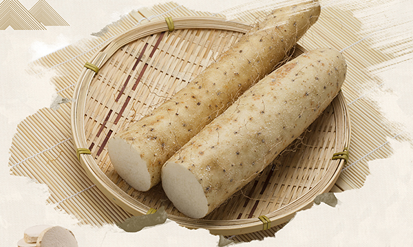
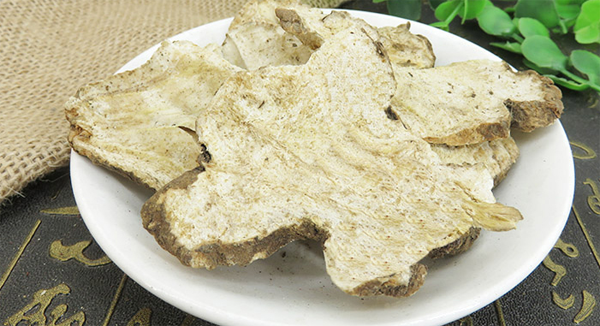
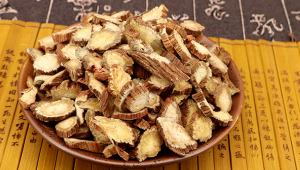

原文连接:https://www.daquan.com/post/11585.html
气虚会引起四肢无力，内脏脱垂不固，气短懒言，免疫力差。引起气虚的原因主要有自身身体原因导致的体虚型体质，还有大病初愈后会有气虚的变现，乏力，出虚汗的情况，外伤手术后也会导致气虚，因为外伤手术伤元气，手术过后都有气虚的症状。
补气的中药
1、紫河车
适应人群：适用于气虚严重，呼吸短促，无力快要晕厥的人群使用。
药用部位：出生时健康孩子的胎盘。
功效及食用方法：补气，益精，养血。治疗身体羸弱，先天不足的患者。紫河车是人的胎盘，是一味特殊的中药，药方中必须使用时才能使用。
2、黄芪

适应人群：适用于气虚，平时食欲不好，不想吃饭的情况，失常感觉乏力，适用于更年期气虚男性使用。
药用部位：黄芪的根部，性味甘温，黄芪可以配伍当归治疗气血两虚。
功效及食用方法：补气、排脓、生肌，治疗气虚导致的皮肤伤口久不愈合的情况。食用方法是将黄芪放入水中煮水饮用，日常可用。
3、山药

适应人群：适用于脾脾气虚弱导致不思饮食，容易腹泻的情况，适用于久泻不止的人群使用。
药用部位：山药的根茎整个。山药是药食同源的药材之一，有很好的补脾胃之气的功效。
功效及食用方法：健脾，护胃，补肺。治疗因为脾气虚导致的腹泻，肺气虚引起的咳嗽。
4、白术

适应人群：适用于气虚严重的孕妇使用。
药用部位：白术的根茎部。性味苦甘，走脾经和胃经。
功效及食用方法：健脾、和胃，补气，祛湿，保胎。治疗因为气虚导致的脾胃失调引起的食欲不振和气虚导致的胎动不安。食用方法有和其他药物配伍使用治疗疾病。
5、西洋参

适应人群：适用于肺气虚弱导致久咳不止的老年人使用。
药用部位：西洋参的根茎部入药。性味苦凉，走心经、肺经、肾精。
功效及食用方法：补气，滋阴，治疗因为肺气虚弱导致的久咳不止。食用方法有泡茶，中药饮片使用。
6、人参

适应人群：气虚药中的，大病大致的气虚的患者，平时感觉无力怕冷的人群使用。
药用部位：人参整个可以入药，人参是名贵的药材之一，时间越长人参的效果越好。
功效及食用方法：补气，固脱，生津，安神，治疗因为气虚严重导致的内脏脱落的情况，食用方法主要有煲汤，做药膳食用，以及与其他药物配伍治疗疾病。
7、党参

适应人群：适用于气虚导致气血不足引起的面色枯黄等情况。
药用部位：党参的根茎部，药效和人参相似但是药性平，比人参更适合平时温补使用。
功效及食用方法：补气，补胃气治疗脾胃气虚引起的食欲不好，脸部气色差发黄的情况。食用方法是，日常可以将其泡茶饮用，健脾和胃。
结语：通过上文的介绍，相信大家都了解了关于补气的中药有哪些，这些要虽然都是补气的中药但是主要对应的症状不同，日常滋养一定要对症治疗。